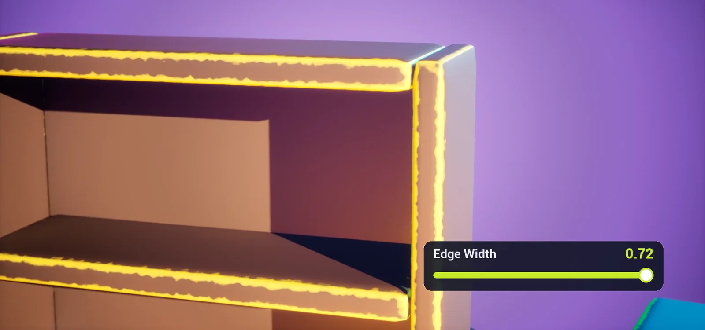
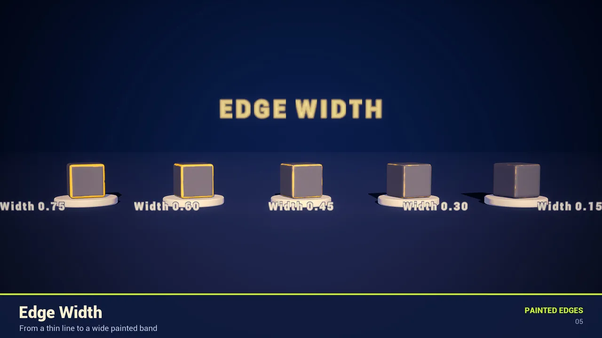
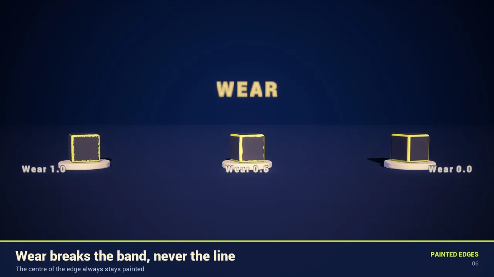
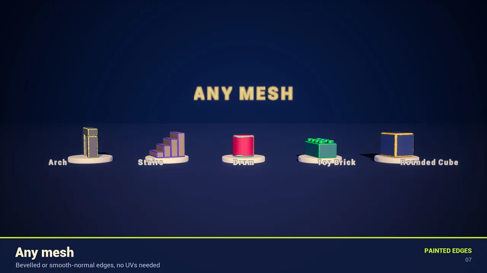
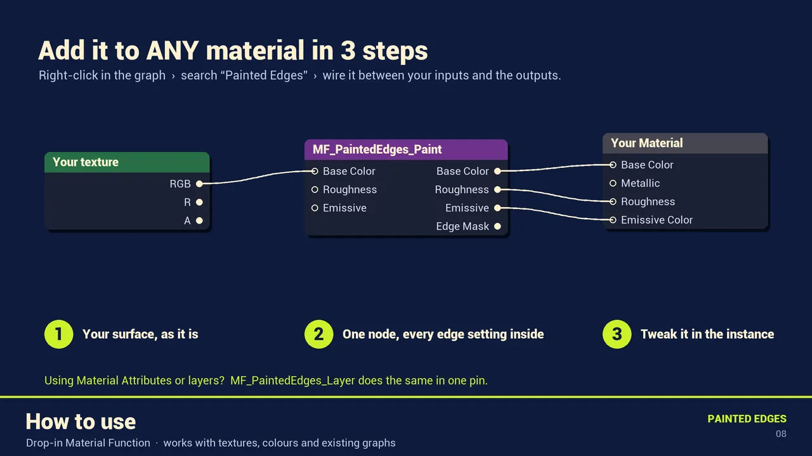
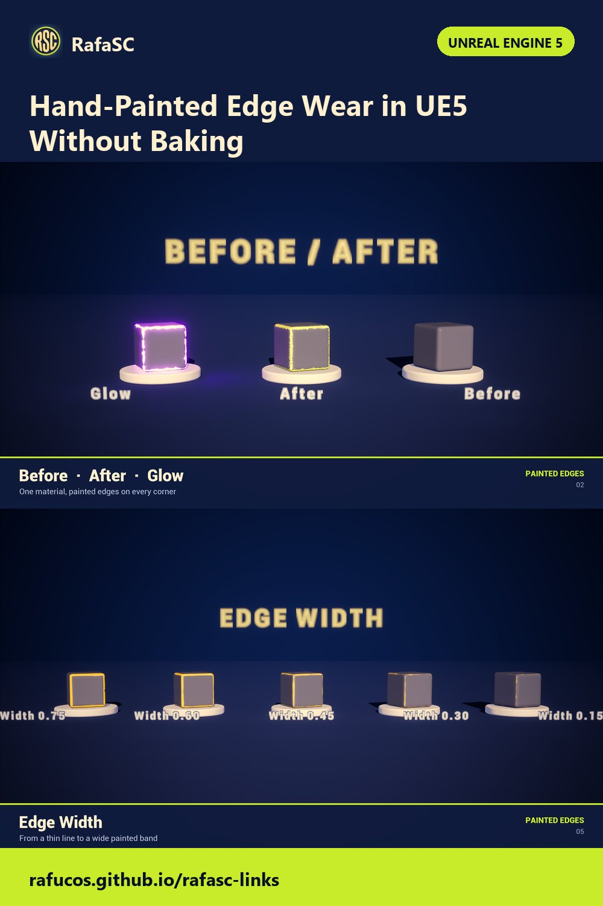

Free
Hand-painted edge wear in UE5 without baking a curvature map
You can get hand-painted edge wear in Unreal Engine 5 without baking a curvature map. Read the mesh normal in object space and keep the middle value of its three absolute components: it is 0 on flat faces and peaks in the centre of every bevelled edge. Painted Edges is a free Material Function that does exactly this, with no UVs and no textures.
By RafaSC, 3D and technical artist · Updated · 7 min read

Why not curvature
Most edge shaders either use a baked curvature map or measure curvature on screen. Baking means UVs, a bake per mesh and a re-export every time you change your mind. And on a round bevel the curvature is the same value all the way across: a flat plateau with nothing to fade. A painter's brush is strongest in the centre of the edge.

The trick: the median of the normal
Every mesh already has what you need: the vertex normal. Read it in object space, take the absolute value of its three components and keep the middle one.
| Where on the mesh | Absolute normal | Median | Result |
|---|---|---|---|
| Flat face | 1, 0, 0 | 0 | No paint |
| Centre of an edge (45 degrees) | 0.71, 0.71, 0 | 0.71 | Full paint |
| Corner of a cube | 0.58, 0.58, 0.58 | 0.58 | Painted |
Divide by 0.71 and you have a ramp that goes from 0 on the faces to 1 in the centre of every edge. That is why the paint is filled in the middle and fades outwards, instead of being a thin outline. And because it is object space, the paint follows the actor when you rotate or move it in the level. It assumes the mesh's own pivot is aligned with the mesh axes (see the limits below).
From ramp to painted band
- Width and softness. Compare the ramp with a threshold,
1 - Edge Width. Everything above is painted; Edge Softness sets how gradually it fades. - Wear. A 3D noise computed from the world position moves the threshold up and down, so the band gets wider and narrower. The threshold is capped and the crest of the ramp is always 1, so the centre of the edge stays painted. Wear never leaves gaps in the line.
- Limit. A minimum threshold keeps the paint on the sharpest edges only. Useful on round props, where the whole surface is gently curved.
- Real-edge gate. The ramp is also high on any sloped flat face, like a roof. To keep those clean, measure how fast the ramp changes per centimetre of surface: fast on a real bevel, almost zero on a flat slope.
- Anti-flicker. Keep the softness at least about one pixel wide. If a band would be thinner than a pixel, fade it out instead of leaving a 1-pixel line that dances with TSR or TAA jitter.


The mesh has to cooperate
The shader reads how the normal turns across an edge, so that turn has to exist.
- A bevel of 1 or 2 segments, or smooth normals, on the edges you want painted. Your mesh can stay low-poly.
- Hard edges with split normals have nothing to paint: the normal jumps. The shader fades them out on purpose.
- Uniform actor scale (2, 2, 2 rather than 1, 3, 1). Non-uniform scale stretches the object-space normal and changes the width per axis.
- Flat faces aligned with the mesh's own axes (pivot and orientation). The "0 on flat faces" result only holds when the faces line up with the object's X, Y and Z axes as exported. Rotating the actor in the level is fine; rotating the mesh itself inside your modeling app is not. In a simple calculation, a cube turned 45 degrees around two axes reads about 0.71 on a flat face (instead of 0) and only 0.5 on its edges, so the order flips. Model and export hard-surface pieces axis-aligned. The real-edge gate helps, but I have not verified it on rotated meshes in Unreal, so check yours.
- Hard-surface with a bevel, not organic shapes. On faceted or organic meshes (rocks, sculpts, low-poly cones) the normal turns all over the surface, so the effect also paints edges you did not intend. Use it on bevelled props, or mask it with a vertex mask or a texture.
- In Blender: a Bevel modifier with 1 or 2 segments plus Shade Auto Smooth. Export FBX with normals and keep Import Normals in Unreal.

Use it in your own material
Painted Edges is free on Fab and ships this as a drop-in function.
- Open your material. Right-click in the graph and type Painted Edges.
- Add MF_PaintedEdges_Paint.
- Connect what you already had, a texture, a colour or any graph, to its Base Color input. Do the same with Roughness and, optionally, Emissive.
- Connect its Base Color, Roughness and Emissive outputs to the material result node. Save.
- Right-click the material and choose Create Material Instance. All edge settings appear there, grouped.

The core function, MF_PaintedEdges, also gives you the raw mask from 0 to 1, so you can drive your own effects:
| Idea | How |
|---|---|
| Dirt or rust on edges | Lerp(your albedo, dirt texture, Edge Mask) |
| Glowing edges only | Edge Mask x colour x intensity into Emissive Color |
| Chipped metal | Lerp(Metallic 0, Metallic 1, Edge Mask) and a lighter Base Color |
Recipes
| Look | Settings |
|---|---|
| Clean cartoon line | Width 0.35, Softness 0.1, Wear 0 |
| Worn, hand-painted prop | Width 0.6, Softness 0.5, Wear 0.9, Wear Scale 8 to 15 |
| Neon or sci-fi glow | Width 0.45, Edge Emissive 10 or more, Wear 1, Wear Scale 8 |
| Subtle highlight on textures | Edge Opacity 0.35, Edge Color close to your texture but lighter |
Cost and limits
The complete example material is about 350 pixel-shader instructions in UE 5.5 (SM6), standard lighting included. There are no texture samples for the effect, no tick and no Blueprint. It is Opaque and Default Lit, so it keeps early depth rejection and the fast Nanite path. It is not compatible with the Path Tracer, because the edge gate and the anti-flicker use screen-space derivatives.
Frequently asked questions
How do I add edge wear in UE5 without a curvature map?
Read the vertex normal in object space, take the absolute value of its three components and keep the middle one. Divided by 0.71 it gives a ramp from 0 on flat faces to 1 in the centre of every bevelled edge. Threshold that ramp to paint the edge.
Why are some edges painted and others not?
Those edges are hard, with split normals, so there is nothing to paint. Add a bevel or smooth the normals. If the bevel is thick, raise Edge Reach.
Do I need to bevel my models?
A bevel or smooth normals, yes. One segment is enough.
Is Painted Edges free for commercial use?
It is a free listing on Fab and can be used commercially under the Fab license.
Does it work with Nanite and Lumen?
Yes. The demo map uses Nanite meshes, Lumen and Virtual Shadow Maps.
Related guides

Save this guide for later. Product used on this page: Painted Edges Shader.